리포트 2 — 다양한 자료
1. 진행사항
- EBT 는 폐기.
- 제안 문서 (Real_Data_DecompFPCA.docx) 의 자료 여덟 가지에 리포트 1 (vic_elec) 의 절차를 그대로 돌림.
2. 자료와 라벨
| 자료 | 문서의 라벨 | 판정 규칙 |
|---|---|---|
| 에어코리아 | 대기 정체 · 고농도 미세먼지 주의보 발령일 vs 청정 대기 확산 · 강수일 | 1 = 지점이 속한 권역에 PM2.5 주의보 · 경보가 걸친 날 / 0 = 그 밖의 날 중 그 권역의 PM2.5 예보 (당일 최종 발표) 가 «좋음» 이거나 가장 가까운 ASOS 일강수 ≥ 1 mm 인 날 |
| EPA PM2.5 | AQI USG 이상 vs Good · Moderate | 1 = 카운티 일 AQI ≥ 101 이고 그날 AQI 를 정한 물질이 PM2.5 인 날 / 0 = 카운티 일 AQI 가 Good · Moderate 인 날 |
| EPA O3 | AQI USG 이상 vs Good · Moderate | 1 = 카운티 일 AQI ≥ 101 이고 그날 AQI 를 정한 물질이 O3 인 날 / 0 = 카운티 일 AQI 가 Good · Moderate 인 날 |
| OpenAQ | (라벨 없음) | LA: EPA 규칙 (LA 카운티 · PM2.5) / 서울 종로구: 에어코리아 규칙 |
| WEIS | 조류경보제 발령 기간 vs 평상시 정상일 | 1 = 대응하는 조류경보 지점에 경보 (관심 이상) 가 걸린 날 / 0 = 경보가 아님이 확인된 날 (모든 달). 대응하는 경보 지점이 없는 곳은 라벨 없음 |
| USGS | 강우 유출 · 홍수 유입일 vs 기저 유출 평수기 | 일유량 Q 를 Lyne–Hollick 필터 (α 0.925, 앞 · 뒤 · 앞) 로 기저 유출과 직접 유출 D 로 나눔. 1 = D / Q ≥ 0.5 인 날 / 0 = D / Q ≤ 0.1 이고 Q 가 지점의 P25 – P75 안인 날 |
| ASOS ① | 폭염 · 열대야 발생일 vs 비폭염 정상일 | 1 = 기상청 공식 폭염일 (일최고 ≥ 33 °C) 또는 열대야일 (18:01 – 익일 09:00 최저 ≥ 25 °C) / 0 = 둘 다 아닌 날 |
| ASOS ② | 청명일 (맑음) vs 강우 · 운량 8 이상 흐린 날 | 1 = 일강수 ≥ 0.1 mm 이거나 일평균 전운량 ≥ 8 인 날 / 0 = 일평균 전운량 0 – 5 (기상청 하늘상태 «맑음») 이고 강수 보고가 없는 날 |
| ISD | 고온 건조 기후일 vs 한랭 전선 통과 · 강수일 | 1 = 강수 ≥ 1 mm 이거나 한랭 전선이 지난 날 (일평균 기온이 전날보다 5 °C 이상 내리고 일평균 해면기압이 3 hPa 이상 오름) / 0 = 강수 0 이고 일최고 ≥ 지점 P75 · 일평균 습도 ≤ 지점 중앙값인 날 |
3. 성능 비교 — 지점별
| 일평균 최적 (오라클) | FPCA | VMD+MFPCA | CEEMDAN+MFPCA | EEMD+MFPCA | EMD+MFPCA | |
|---|---|---|---|---|---|---|
| 평균 | 0.796 | 0.512 | 0.515 | 0.518 | 0.525 | 0.500 |
| Q1 | 0.764 | 0.057 | 0.062 | 0.076 | 0.090 | 0.060 |
| Q2 | 0.801 | 0.695 | 0.690 | 0.688 | 0.694 | 0.681 |
| Q3 | 0.835 | 0.761 | 0.760 | 0.760 | 0.761 | 0.753 |
| min | 0.456 | 0.000 | 0.000 | -0.005 | 0.000 | -0.040 |
| max | 1.000 | 1.000 | 1.000 | 1.000 | 1.000 | 1.000 |
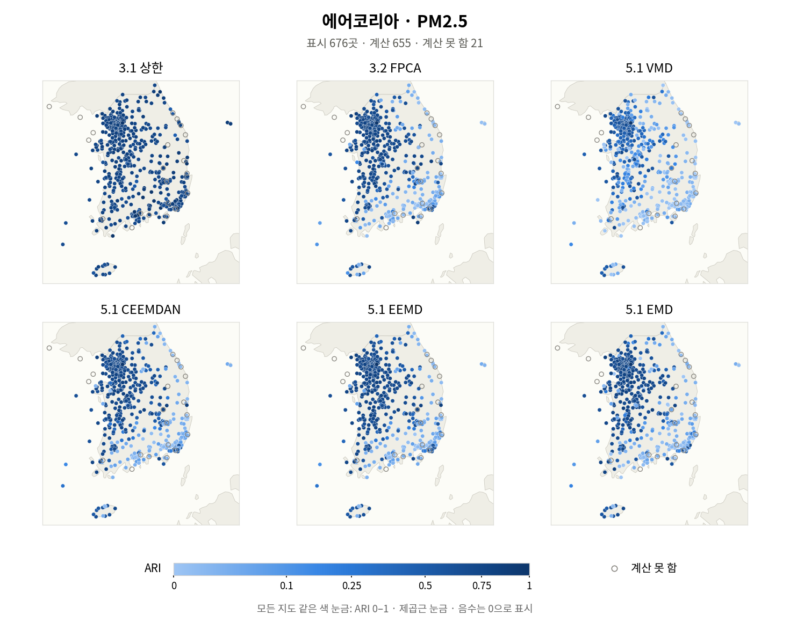
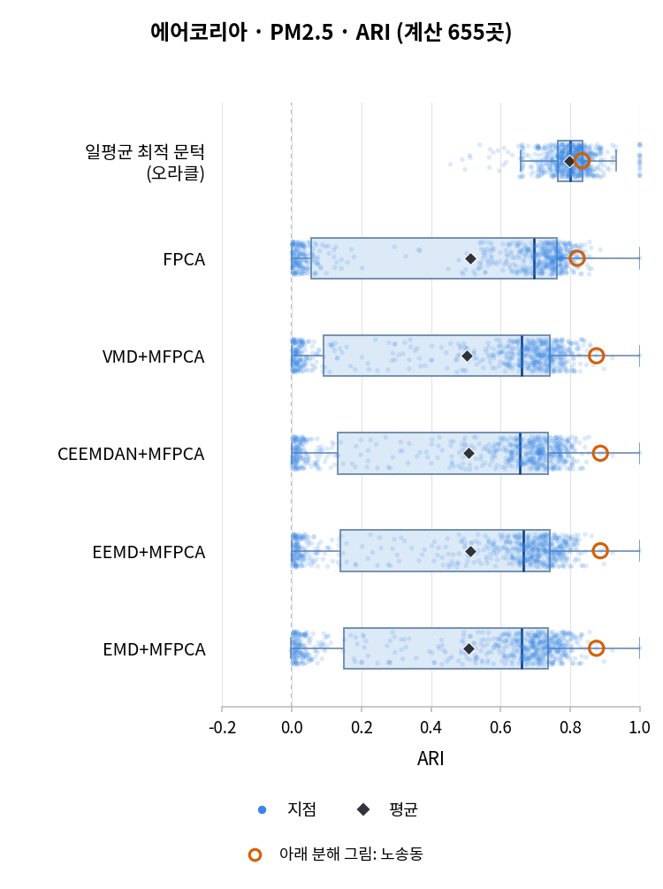
| 일평균 최적 (오라클) | FPCA | VMD+MFPCA | CEEMDAN+MFPCA | EEMD+MFPCA | EMD+MFPCA | |
|---|---|---|---|---|---|---|
| 평균 | 0.801 | 0.130 | 0.144 | 0.142 | 0.142 | 0.119 |
| Q1 | 0.665 | 0.010 | 0.010 | 0.011 | 0.010 | 0.007 |
| Q2 | 0.875 | 0.035 | 0.031 | 0.033 | 0.034 | 0.025 |
| Q3 | 1.000 | 0.170 | 0.173 | 0.180 | 0.165 | 0.141 |
| min | 0.006 | -0.013 | -0.013 | -0.013 | -0.013 | -0.024 |
| max | 1.000 | 1.000 | 1.000 | 1.000 | 1.000 | 1.000 |
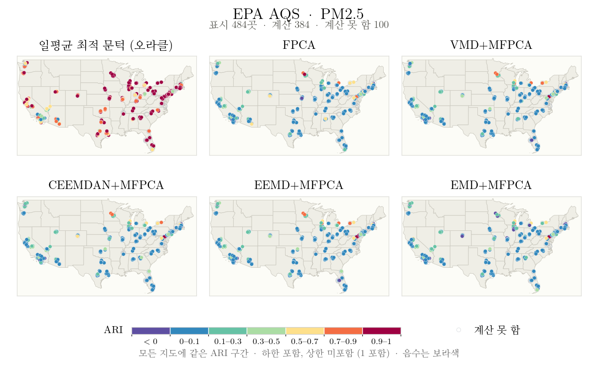
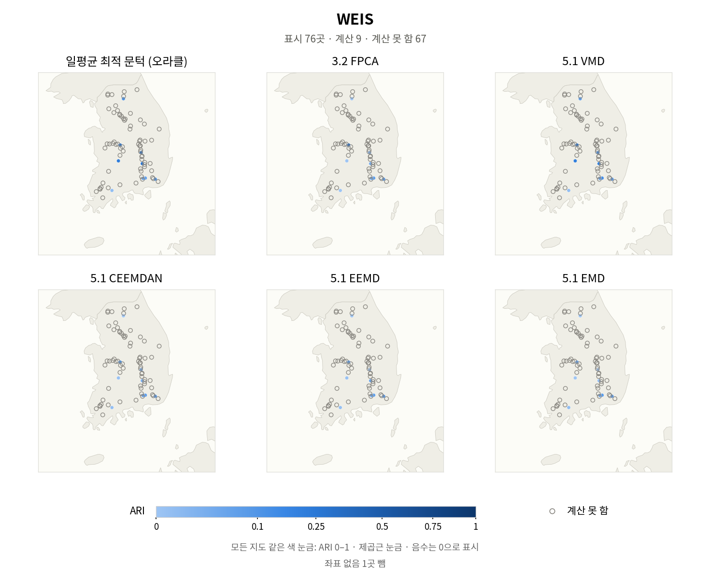
| 일평균 최적 (오라클) | FPCA | VMD+MFPCA | CEEMDAN+MFPCA | EEMD+MFPCA | EMD+MFPCA | |
|---|---|---|---|---|---|---|
| 평균 | 0.440 | 0.027 | 0.033 | 0.028 | 0.038 | 0.032 |
| Q1 | 0.300 | -0.001 | -0.001 | -0.001 | 0.000 | -0.001 |
| Q2 | 0.437 | 0.002 | 0.002 | 0.001 | 0.005 | 0.003 |
| Q3 | 0.569 | 0.015 | 0.016 | 0.013 | 0.025 | 0.021 |
| min | -0.010 | -0.085 | -0.099 | -0.099 | -0.080 | -0.086 |
| max | 1.000 | 0.655 | 0.679 | 0.694 | 0.657 | 0.718 |
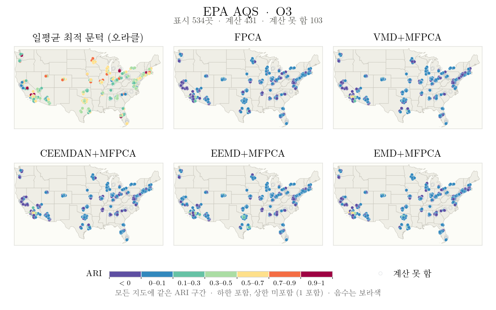
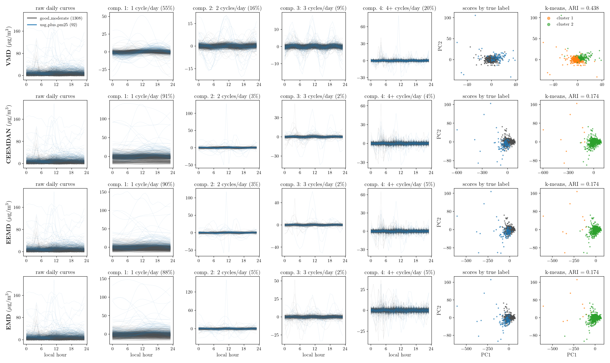
| 지역 | 지점 | 물질 | 1 / 0 (일) | 일평균 최적 (오라클) | FPCA | VMD+MFPCA | CEEMDAN+MFPCA | EEMD+MFPCA | EMD+MFPCA |
|---|---|---|---|---|---|---|---|---|---|
| 평균 | 0.878 | 0.419 | 0.480 | 0.480 | 0.480 | 0.480 | |||
| California | Los Angeles – N. Main | PM2.5 | 24 / 436 | 0.903 | 0.203 | 0.203 | 0.203 | 0.203 | 0.203 |
| 서울특별시 | 서울 종로구 | PM2.5 | 11 / 258 | 0.853 | 0.635 | 0.757 | 0.757 | 0.757 | 0.757 |
| 일평균 최적 (오라클) | FPCA | VMD+MFPCA | CEEMDAN+MFPCA | EEMD+MFPCA | EMD+MFPCA | |
|---|---|---|---|---|---|---|
| 평균 | 0.163 | 0.064 | 0.039 | 0.030 | 0.042 | 0.032 |
| Q1 | 0.060 | 0.000 | 0.000 | -0.009 | 0.001 | 0.001 |
| Q2 | 0.119 | 0.027 | 0.038 | 0.026 | 0.048 | 0.012 |
| Q3 | 0.269 | 0.064 | 0.062 | 0.048 | 0.062 | 0.066 |
| min | 0.002 | -0.009 | -0.009 | -0.010 | -0.009 | -0.009 |
| max | 0.353 | 0.357 | 0.118 | 0.112 | 0.105 | 0.088 |
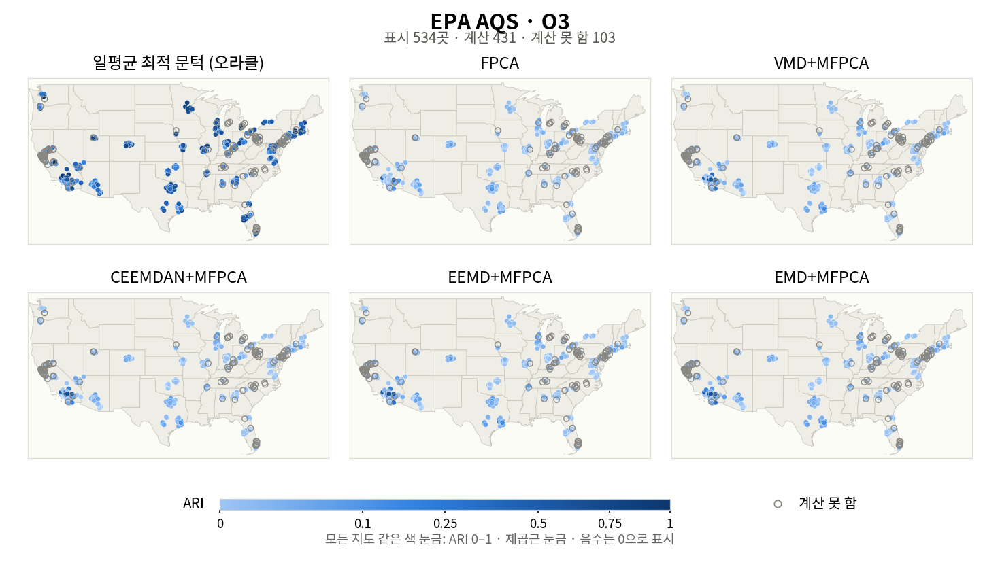
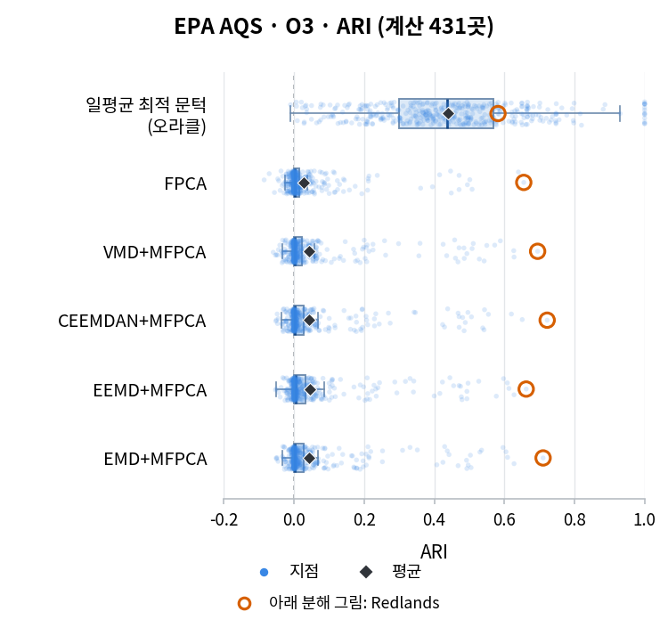
| 일평균 최적 (오라클) | FPCA | VMD+MFPCA | CEEMDAN+MFPCA | EEMD+MFPCA | EMD+MFPCA | |
|---|---|---|---|---|---|---|
| 평균 | 0.214 | 0.095 | 0.082 | 0.074 | 0.089 | 0.076 |
| Q1 | 0.085 | 0.000 | -0.002 | -0.002 | 0.000 | -0.001 |
| Q2 | 0.173 | 0.028 | 0.019 | 0.017 | 0.023 | 0.024 |
| Q3 | 0.307 | 0.117 | 0.096 | 0.083 | 0.113 | 0.088 |
| min | -0.002 | -0.105 | -0.105 | -0.104 | -0.090 | -0.105 |
| max | 1.000 | 1.000 | 1.000 | 1.000 | 0.867 | 0.867 |
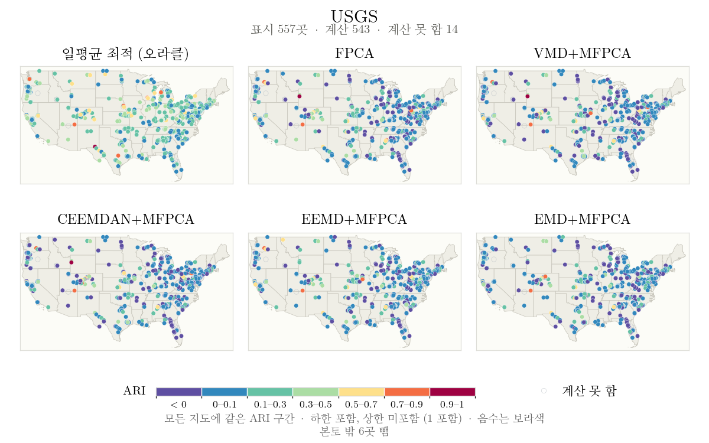
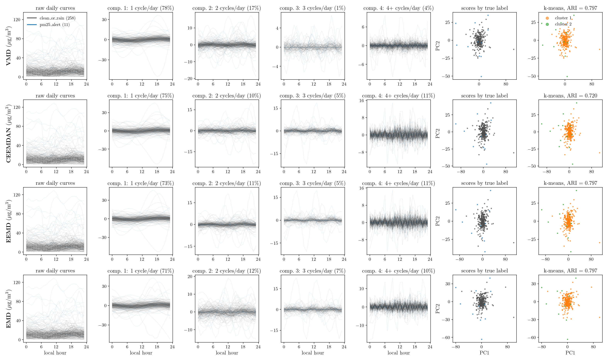
| 일평균 최적 (오라클) | FPCA | VMD+MFPCA | CEEMDAN+MFPCA | EEMD+MFPCA | EMD+MFPCA | |
|---|---|---|---|---|---|---|
| 평균 | 0.798 | 0.059 | 0.086 | 0.061 | 0.051 | 0.048 |
| Q1 | 0.787 | 0.050 | 0.078 | 0.050 | 0.039 | 0.032 |
| Q2 | 0.801 | 0.061 | 0.098 | 0.056 | 0.059 | 0.044 |
| Q3 | 0.820 | 0.073 | 0.099 | 0.075 | 0.073 | 0.063 |
| min | 0.706 | 0.022 | 0.035 | 0.023 | -0.018 | 0.023 |
| max | 0.866 | 0.086 | 0.116 | 0.095 | 0.089 | 0.079 |
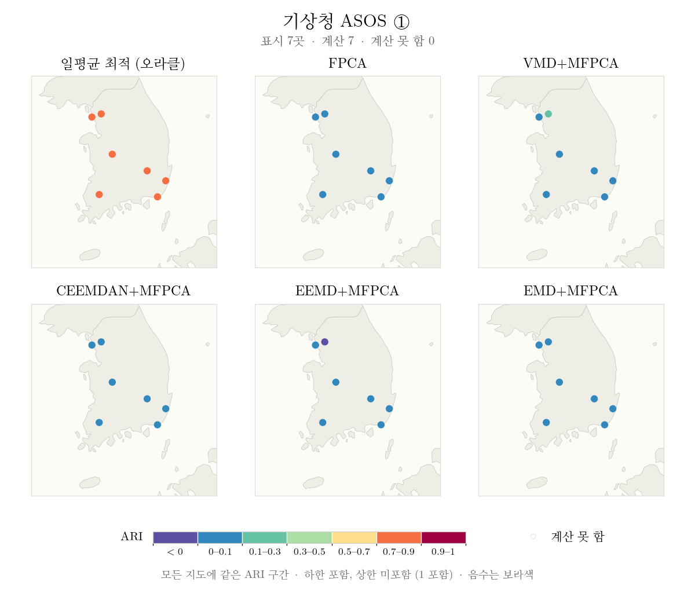
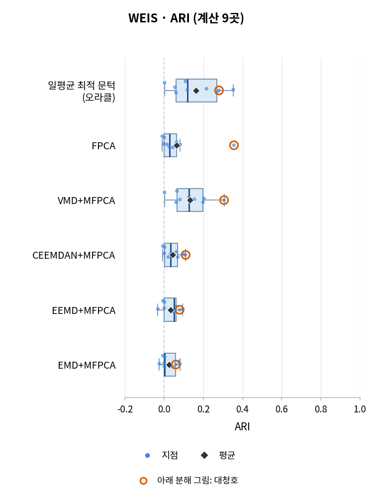
| 일평균 최적 (오라클) | FPCA | VMD+MFPCA | CEEMDAN+MFPCA | EEMD+MFPCA | EMD+MFPCA | |
|---|---|---|---|---|---|---|
| 평균 | 0.066 | 0.192 | 0.190 | 0.194 | 0.180 | 0.160 |
| Q1 | 0.051 | 0.146 | 0.150 | 0.138 | 0.147 | 0.120 |
| Q2 | 0.070 | 0.217 | 0.198 | 0.208 | 0.191 | 0.148 |
| Q3 | 0.086 | 0.226 | 0.221 | 0.238 | 0.204 | 0.209 |
| min | 0.032 | 0.117 | 0.128 | 0.124 | 0.136 | 0.092 |
| max | 0.088 | 0.266 | 0.264 | 0.271 | 0.230 | 0.219 |
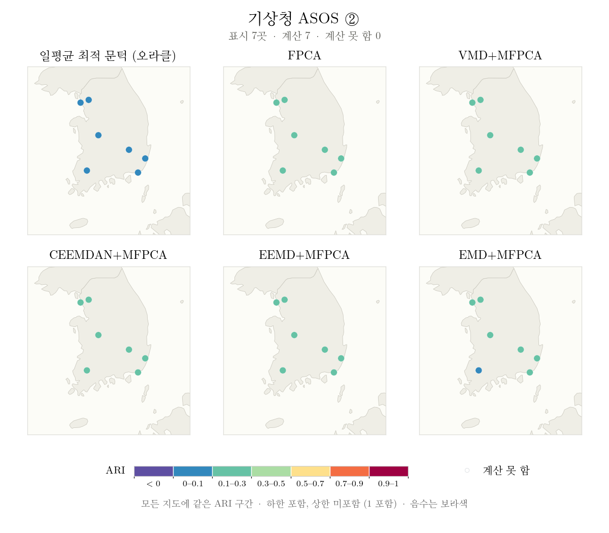
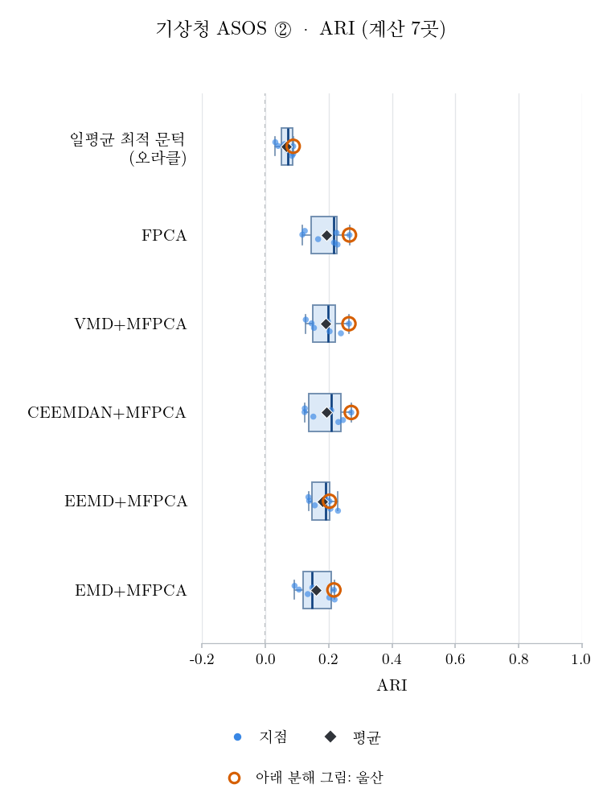
| 일평균 최적 (오라클) | FPCA | VMD+MFPCA | CEEMDAN+MFPCA | EEMD+MFPCA | EMD+MFPCA | |
|---|---|---|---|---|---|---|
| 평균 | 0.504 | 0.253 | 0.239 | 0.129 | 0.271 | 0.177 |
| Q1 | 0.341 | 0.039 | 0.027 | -0.001 | 0.036 | -0.001 |
| Q2 | 0.401 | 0.097 | 0.086 | 0.029 | 0.092 | 0.059 |
| Q3 | 0.651 | 0.324 | 0.322 | 0.104 | 0.452 | 0.151 |
| min | 0.230 | -0.107 | -0.088 | -0.107 | -0.108 | -0.108 |
| max | 0.993 | 0.986 | 0.986 | 0.986 | 0.993 | 0.980 |
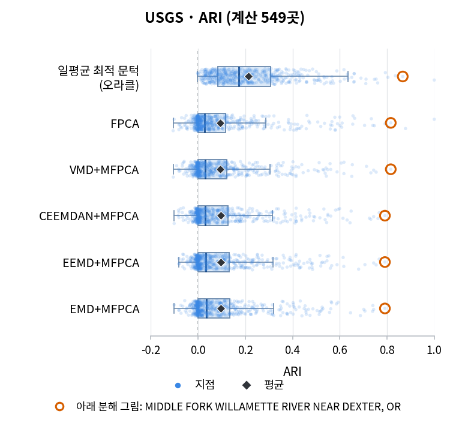
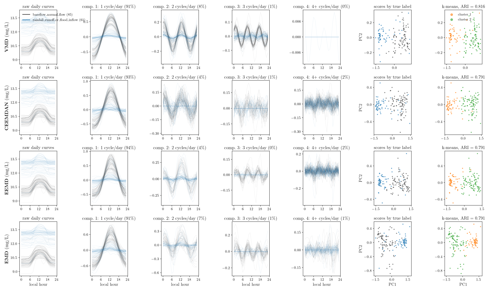
4. 어블레이션
- 표의 줄 — Full model 에서 부품을 하나씩 뺌 (w/o = without). 값은 평균 ARI, 괄호는 Full model 과의 차.
- w/o decomposition: 분해 없이 하루 원곡선을 FPCA
- w/o band regrouping: 재배치 알고리즘 제거
- w/o band weighting: MFPCA 의 칸 가중치를 모두 1
- w/o energy truncation: 99 % 에서 자르지 않고 성분을 전부 넣음
- w/o score standardization: MFPCA 점수를 표준화하지 않고 바로 k-means
| 바꾼 것 | VMD | CEEMDAN | EEMD | EMD |
|---|---|---|---|---|
| Full model | 0.515 | 0.518 | 0.525 | 0.500 |
| w/o decomposition | 0.512 (-0.003) | 0.512 (-0.006) | 0.512 (-0.013) | 0.512 (+0.012) |
| w/o band regrouping | 0.437 (-0.078) | 0.045 (-0.473) | 0.065 (-0.461) | 0.037 (-0.463) |
| w/o band weighting | 0.514 (-0.001) | 0.499 (-0.019) | 0.527 (+0.002) | 0.489 (-0.011) |
| w/o energy truncation | 0.515 (-0.000) | 0.517 (-0.001) | 0.525 (-0.001) | 0.512 (+0.013) |
| w/o score standardization | 0.596 (+0.081) | 0.594 (+0.076) | 0.596 (+0.071) | 0.566 (+0.067) |
| 바꾼 것 | VMD | CEEMDAN | EEMD | EMD |
|---|---|---|---|---|
| Full model | 0.144 | 0.142 | 0.142 | 0.119 |
| w/o decomposition | 0.130 (-0.013) | 0.130 (-0.011) | 0.130 (-0.011) | 0.130 (+0.012) |
| w/o band regrouping | 0.137 (-0.007) | 0.048 (-0.093) | 0.072 (-0.069) | 0.059 (-0.059) |
| w/o band weighting | 0.146 (+0.003) | 0.130 (-0.011) | 0.145 (+0.003) | 0.109 (-0.009) |
| w/o energy truncation | 0.145 (+0.001) | 0.146 (+0.004) | 0.142 (-0.000) | 0.131 (+0.012) |
| w/o score standardization | 0.157 (+0.013) | 0.167 (+0.025) | 0.168 (+0.026) | 0.148 (+0.030) |
| 바꾼 것 | VMD | CEEMDAN | EEMD | EMD |
|---|---|---|---|---|
| Full model | 0.033 | 0.028 | 0.038 | 0.032 |
| w/o decomposition | 0.027 (-0.007) | 0.027 (-0.001) | 0.027 (-0.012) | 0.027 (-0.005) |
| w/o band regrouping | 0.035 (+0.001) | 0.027 (-0.002) | 0.058 (+0.019) | 0.026 (-0.006) |
| w/o band weighting | 0.034 (+0.000) | 0.025 (-0.003) | 0.038 (-0.000) | 0.031 (-0.001) |
| w/o energy truncation | 0.033 (+0.000) | 0.028 (+0.000) | 0.037 (-0.002) | 0.033 (+0.001) |
| w/o score standardization | 0.037 (+0.004) | 0.036 (+0.008) | 0.042 (+0.004) | 0.039 (+0.007) |
| 바꾼 것 | VMD | CEEMDAN | EEMD | EMD |
|---|---|---|---|---|
| Full model | 0.480 | 0.480 | 0.480 | 0.480 |
| w/o decomposition | 0.419 (-0.061) | 0.419 (-0.061) | 0.419 (-0.061) | 0.419 (-0.061) |
| w/o band regrouping | 0.098 (-0.382) | 0.154 (-0.326) | -0.025 (-0.505) | -0.013 (-0.493) |
| w/o band weighting | 0.631 (+0.151) | 0.415 (-0.065) | 0.621 (+0.141) | 0.480 (+0.000) |
| w/o energy truncation | 0.480 (+0.000) | 0.480 (+0.000) | 0.480 (+0.000) | 0.480 (+0.000) |
| w/o score standardization | 0.810 (+0.330) | 0.806 (+0.326) | 0.815 (+0.335) | 0.537 (+0.057) |
| 바꾼 것 | VMD | CEEMDAN | EEMD | EMD |
|---|---|---|---|---|
| Full model | 0.039 | 0.030 | 0.042 | 0.032 |
| w/o decomposition | 0.064 (+0.026) | 0.064 (+0.034) | 0.064 (+0.022) | 0.064 (+0.032) |
| w/o band regrouping | 0.030 (-0.008) | 0.059 (+0.030) | 0.023 (-0.019) | 0.025 (-0.007) |
| w/o band weighting | 0.025 (-0.013) | 0.026 (-0.004) | 0.042 (+0.000) | 0.032 (+0.000) |
| w/o energy truncation | 0.038 (-0.000) | 0.030 (-0.000) | 0.036 (-0.006) | 0.038 (+0.006) |
| w/o score standardization | 0.033 (-0.006) | 0.032 (+0.002) | 0.032 (-0.010) | 0.038 (+0.006) |
| 바꾼 것 | VMD | CEEMDAN | EEMD | EMD |
|---|---|---|---|---|
| Full model | 0.082 | 0.074 | 0.089 | 0.076 |
| w/o decomposition | 0.095 (+0.012) | 0.095 (+0.021) | 0.095 (+0.005) | 0.095 (+0.018) |
| w/o band regrouping | 0.088 (+0.006) | 0.061 (-0.013) | 0.049 (-0.040) | 0.038 (-0.039) |
| w/o band weighting | 0.073 (-0.009) | 0.071 (-0.003) | 0.088 (-0.002) | 0.077 (+0.001) |
| w/o energy truncation | 0.083 (+0.001) | 0.073 (-0.001) | 0.090 (+0.001) | 0.075 (-0.001) |
| w/o score standardization | 0.068 (-0.014) | 0.066 (-0.007) | 0.073 (-0.016) | 0.064 (-0.012) |
| 바꾼 것 | VMD | CEEMDAN | EEMD | EMD |
|---|---|---|---|---|
| Full model | 0.086 | 0.061 | 0.051 | 0.048 |
| w/o decomposition | 0.059 (-0.027) | 0.059 (-0.002) | 0.059 (+0.008) | 0.059 (+0.011) |
| w/o band regrouping | 0.038 (-0.048) | -0.003 (-0.064) | -0.013 (-0.064) | -0.010 (-0.058) |
| w/o band weighting | 0.032 (-0.055) | 0.032 (-0.028) | 0.017 (-0.034) | 0.043 (-0.005) |
| w/o energy truncation | 0.086 (-0.001) | 0.060 (-0.000) | 0.065 (+0.015) | 0.051 (+0.003) |
| w/o score standardization | -0.004 (-0.090) | -0.003 (-0.063) | -0.002 (-0.053) | -0.001 (-0.049) |
| 바꾼 것 | VMD | CEEMDAN | EEMD | EMD |
|---|---|---|---|---|
| Full model | 0.190 | 0.194 | 0.180 | 0.160 |
| w/o decomposition | 0.192 (+0.002) | 0.192 (-0.002) | 0.192 (+0.012) | 0.192 (+0.032) |
| w/o band regrouping | 0.171 (-0.019) | 0.021 (-0.173) | 0.026 (-0.154) | 0.030 (-0.129) |
| w/o band weighting | 0.168 (-0.022) | 0.151 (-0.042) | 0.118 (-0.062) | 0.153 (-0.006) |
| w/o energy truncation | 0.191 (+0.001) | 0.193 (-0.000) | 0.187 (+0.007) | 0.159 (-0.001) |
| w/o score standardization | 0.042 (-0.149) | 0.043 (-0.151) | 0.042 (-0.138) | 0.043 (-0.117) |
| 바꾼 것 | VMD | CEEMDAN | EEMD | EMD |
|---|---|---|---|---|
| Full model | 0.239 | 0.129 | 0.271 | 0.177 |
| w/o decomposition | 0.253 (+0.014) | 0.253 (+0.124) | 0.253 (-0.017) | 0.253 (+0.076) |
| w/o band regrouping | 0.230 (-0.010) | 0.219 (+0.090) | 0.211 (-0.059) | 0.110 (-0.067) |
| w/o band weighting | 0.241 (+0.002) | 0.033 (-0.096) | 0.255 (-0.016) | 0.145 (-0.032) |
| w/o energy truncation | 0.240 (+0.001) | 0.129 (-0.000) | 0.267 (-0.004) | 0.125 (-0.052) |
| w/o score standardization | 0.220 (-0.020) | 0.204 (+0.075) | 0.223 (-0.048) | 0.178 (+0.000) |